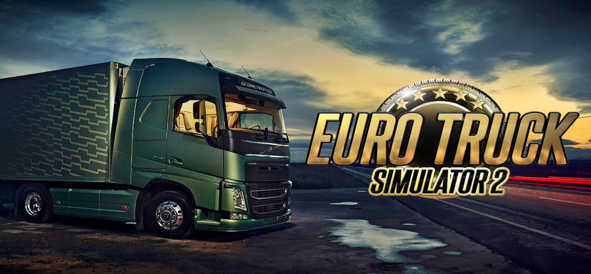
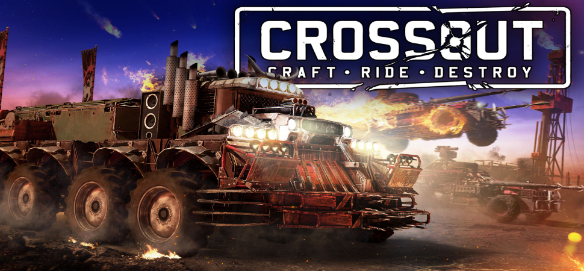
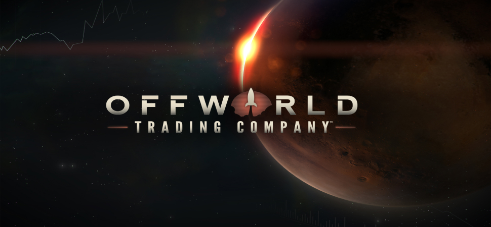

 Технические симуляции Euro Truck Simulator 2 является лучшей игрой в жанре технических симуляций благодаря своей реалистичной модели вождения грузовика, масштабным картам Европы, возможности управления собственной фирмой и широкому спектру дополнительного контента. Игра предлагает игрокам уникальный опыт вождения грузовиков, позволяя им почувствовать себя настоящими дальнобойщиками.
 Аркадные симуляции Crossout является лучшей игрой в жанре аркадных симуляций благодаря своей динамичной геймплейной механике, возможности создавать уникальные боевые машины, богатому выбору оружия и деталей для кастомизации, а также постоянному обновлению контента и соревновательному онлайн-режиму.
 Экономические симуляции Offworld Trading Company является лучшей игрой в жанре экономических симуляций благодаря увлекательной и глубокой стратегической механике, возможности конкурировать соперниками за ресурсы на Марсе, динамичному игровому процессу без излишней микроменеджмента, а также разнообразию тактических возможностей и стратегий.